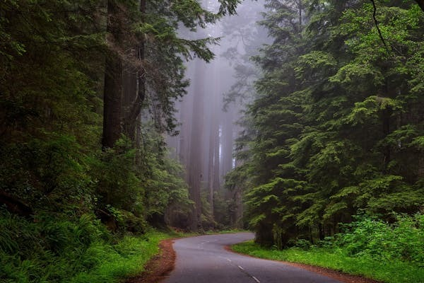

-

Abujmarh
Abujhmarh is a hilly forest area, spread over 4,000 square kilometres (1,500 sq mi) in Chhattisgarh, covering Narayanpur district, Bijapur district and Dantewada district. It is home to indigenous tribes of India, including Gond, Muria, Abujhmarhia, Madiya, and Halba. It was only in 2009 that the Government of Chhattisgarh lifted the restriction on the entry of common people in the area imposed in the early 1980s. Geographically isolated and largely inaccessible, the area continues to show no physical presence of the civil administration, and is also known as "liberated-zone" as it is an alleged hub of Naxalite-Maoist insurgency, the banned Communist Party of India (Maoist) and its military wing, People's Liberation Guerilla Army (PLGA), who run a parallel government in the area.In 2007 the area was proposed as a biosphere reserve by Ministry of Environment and Forests, Government of India.
-

Mawphlang
Mawphlang is a village in the East Khasi Hills district of Meghalaya state in north-eastern India, 25 kilometers from Shillong. The word maw means "stone", maw phlang means "grassy stone," and is one of many settlements in the Khasi hills named after monoliths. Mawphlang was the centre of Presbyterian Church of Wales missionary and medical activity in the Khasi Hills during the 1890s. A dispensary and then clinic were established in 1878 by Dr Griffith Griffiths of Brynmawr, Aberdaron who died at Mawphlang, 22 April 1892.[2][3][4][5] After Griffiths came William Williams (missionary) who also died at Mawphlang.Mawphlang is the site of one of the Khasi Hills sacred groves.[7][8] Khasi heritage village- located in the Mawphlang district -is considered to be the hub of Khasi culture. As per digital media NewsGram, the village project is in shambles. The heritage project was started with much fanfare, but has suffered losses due to governmental apathy and charges of corruption.
-
Baikunthapur
Baikunthapur is a Terai forest region in the western part of the Dooars in West Bengal, India, south of the Himalayan foothills, between the Mahananda River to the west and Teesta River to the east. The main towns in the area are Siliguri and Jalpaiguri. The forests are partly in the Darjeeling district and partly in the Jalpaiguri district.Baikunthapur is an important ecological zone, home to many wild elephants, but is threatened by growth of the local population. The least disturbed areas are in the Mahananda Wildlife Sanctuary.Historically, the Baikunthapur forests were the secure base of the Raikat princes in the time when Koch Bihar was an independent kingdom.